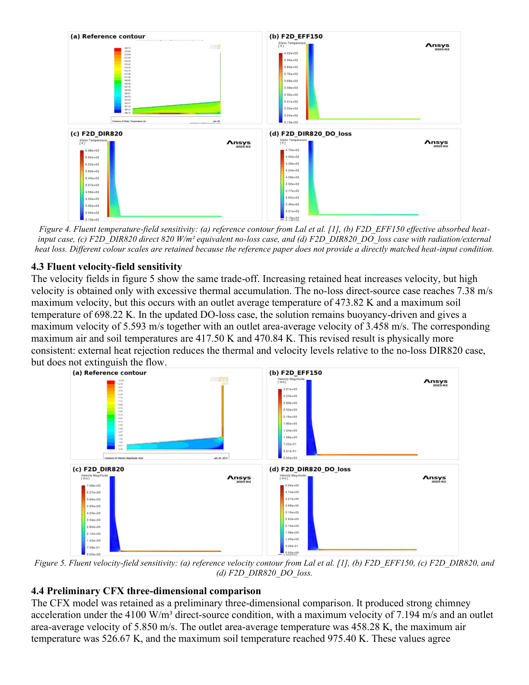

University of Auckland course research project
Solar Chimney CFD: Natural Convection and Conjugate Heat Transfer
How fast does sun-heated air rise through a solar chimney? I modelled a published laboratory-scale chimney (12 m collector, 8 m tower) in ANSYS Fluent; the 36,847-cell production mesh is within 0.90% of the fine-mesh outlet velocity.
My role: I set up the Fluent and CFX models, ran the heat-input cases and the mesh study, checked the results against first principles and wrote the technical report.

Key finding
How the heat input is interpreted, not mesh resolution, controls the predicted draught. A buoyancy hand calculation showed that the reference paper's 12.2 m/s draught would need a ~299 K temperature rise, inconsistent with its reported 42–46 °C, so I treated it as an uncertain benchmark instead of tuning the model to match it.
The model
- Fluent 2D axisymmetric model as the main workflow, with a preliminary 3D CFX model to compare solver and dimensionality effects.
- Three coupled regions: ideal-gas air, a dry-soil absorber and a transparent polyethylene cover, linked by conjugate heat-transfer wall pairs.
- Purely buoyancy-driven flow: pressure inlet and outlet with no imposed velocity; realizable k-epsilon turbulence, supported by Reynolds and Rayleigh number checks.
- Three grids (5,763, 36,847 and 56,787 cells) with 12 inflation layers (1 mm first layer) at the walls and heat-transfer interfaces.
Checks before using the results
- Heat input: a direct solar-loading setup through the cover recovered only about 3.75 kW of the expected 92.7 kW (820 W/m² over 113 m²), so I used controlled soil heat sources whose total input could be verified.
- Balances: equal and opposite heat flow across the coupled air–soil walls; CFX inlet–outlet mass imbalance of about 0.026%.
- Plausibility: the effective-heat baseline gave 2.54 m/s outlet-average velocity (3.74 m/s peak), within the roughly 1.7–5.1 m/s reported for other pilot solar chimneys.
Next steps: compare against a dataset with measured inlet and outlet conditions and surface temperatures.
Get in touch
I am completing my Master of Engineering Studies (Mechanical) at the University of Auckland in July 2027 and am looking for graduate mechanical engineering roles in New Zealand.